大分インターから車に揺られて2時間半。やって参りました学問のパワースポット太宰府天満宮！今回はここで私の進級祈願を行います。この大きな門を潜ってみると、屋根が森になっている本殿が見えてきました。ゴールデンウィーク中ということもあってか、観光客の数がとても多い。見たところ、中国からの旅行者がとても多いようで、至る所で中国語が聞こえてきました。
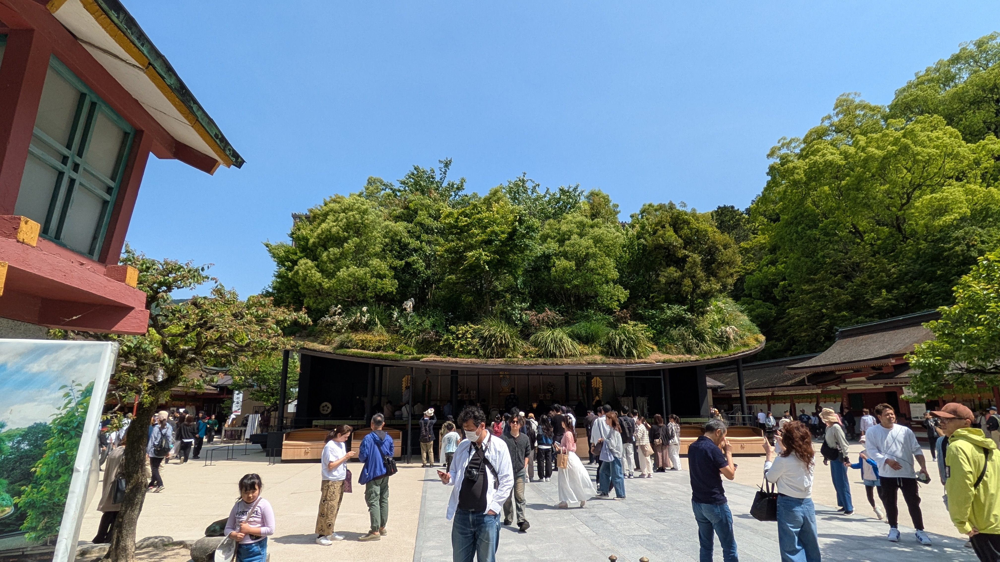
大宰府の作法はよく知らないので、ひとまず二礼二拍手で参拝。誠意は金額で表すべきという持論を持っているので、贅沢に100円を賽銭箱へin。
留年しませんように。ついでに彼女が出来ますように。
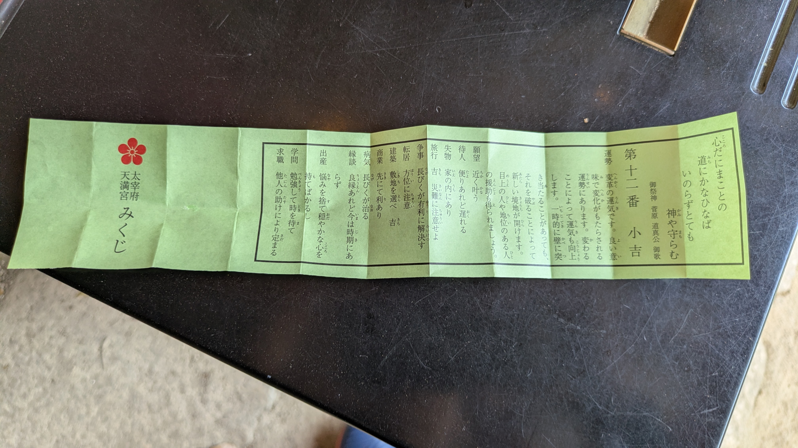
神社といえばやはりおみくじ。去年来た時は『学問』に何が書かれているのか気になっていたが、今年はやはり『縁談』。つまり彼女が出来るか否か。
結果は「良縁あれど今は時期にあらず」。つまり、「XXXXでXXなXXXX彼女が出来る運命だけど、今はまだその時では無い」ということか。将来に大きな希望が出来た。いい世来いよ！
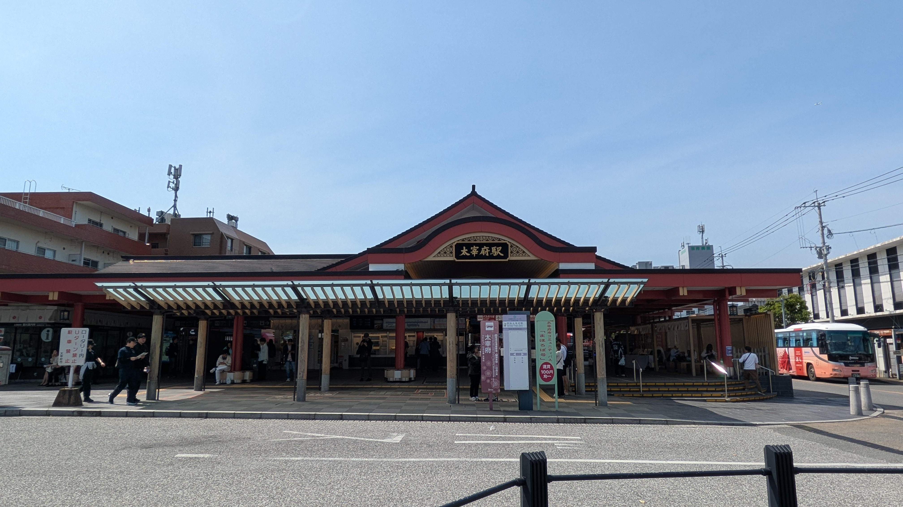
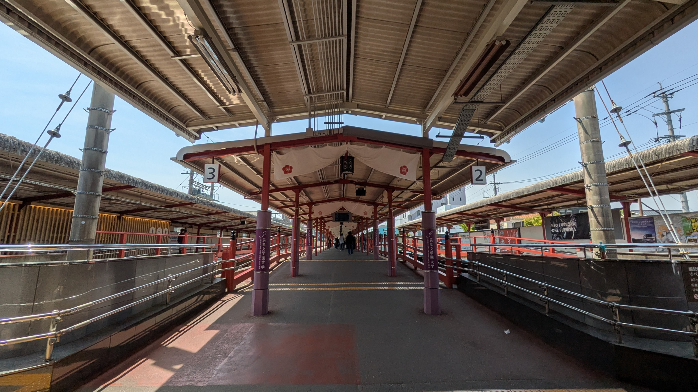
参拝を済ませいざ天神に向かうべく太宰府駅に向かうと、そのカッコよさに圧倒。プラットフォームのセンスが神がかっている。ここから天神駅までおよそ20分ほど。天神駅に着いてまず行くべき場所はどこだろうか。もちろん福岡PARCOのアニメイトだよな？
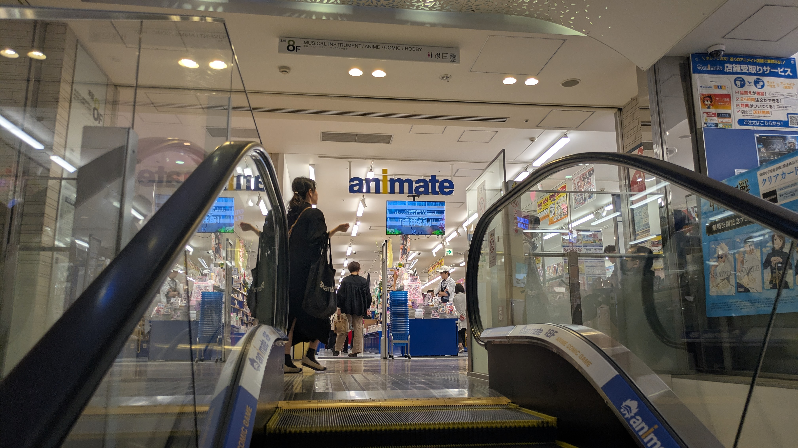
というわけでやって参りました『アニメイト福岡パルコ店』。店内の広さは大分店の6倍ぐらい。さすが大都市のアニメイト。人も品数も店舗もすべてが大分よりも大きい。大分のもこれぐらいの大きさだったら毎週通うかもしれない。財布のことは別として。
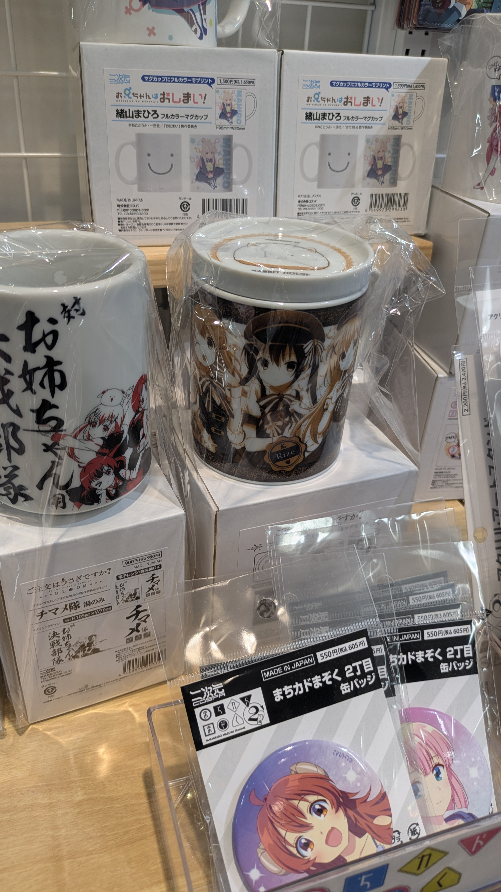
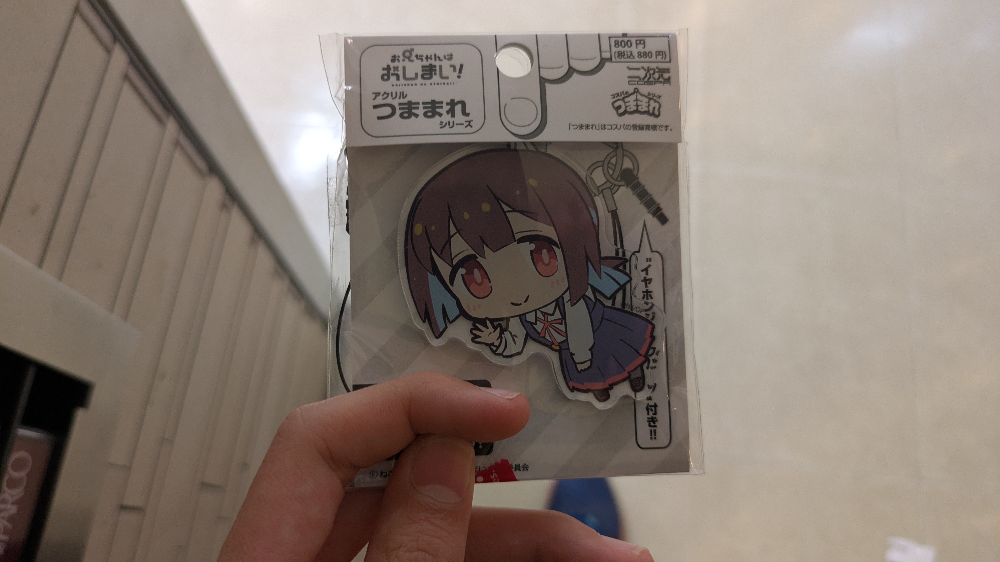
アニメイトでは琴線に触れる商品は見つからなかったので隣の『コスパ・トラベリング・デポ』へ移動。そこでごちうさのマグカップを発見！欲しいけどさすがにこれを家で使う勇気はない…泣く泣くおにまいのアクキーを買いました。
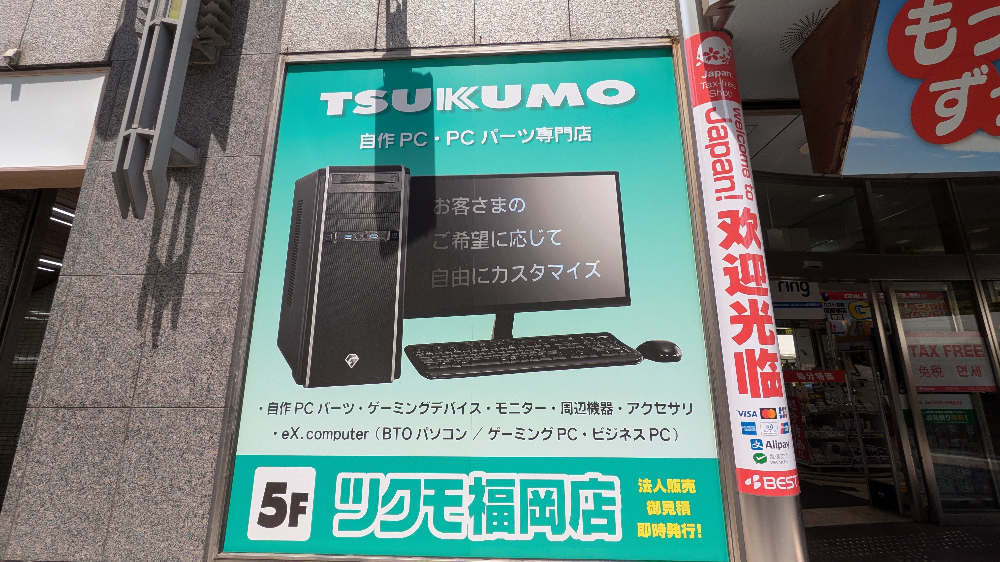
次に向かうのは大きなTSUKUMOの看板が目印の『ベスト電器福岡本店ビル』。ここの5階にはPCショップの『TSUKUMO』。そして9階には同人誌系ショップの『メロンブックス』が入店。これは行くしかないですね。
TSUKUMO店内には20万円超えのグラボがずらずらと。最近発売されたばかりのRadeon RX 9700 を初めて生で見ることが出来ました。高性能グラボは漢の浪漫。バイトでもして買いたい。
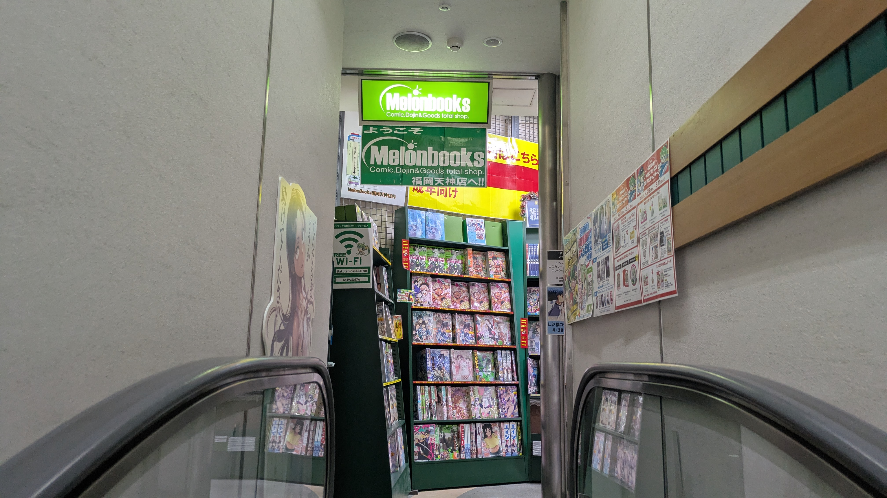
エスカレーターを上って9階に行くと『メロンブックス福岡天神店』の入り口が見えてきました。この小さな入り口からは想像もできないほどに店内は広く、おそらく大分のアニメイトの7倍ほどではないでしょうか。ちなみにR18コーナーの広さが不明なので、そこを入れるともっと広いかと。生まれて初めて生の同人誌を物色。やはり薄くて少し大きめですね。「薄い本」と呼ばれる所以がわかりました。
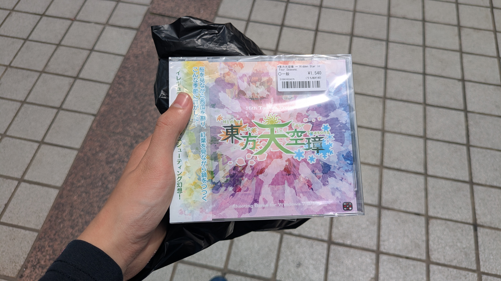
同人CDコーナーに行ってみるとなんと東方原作が！原作が生で売られているのを見るのは生まれて初めてです。いろいろな原作が売られていたのですが、とりあえず『東方天空璋』を即買い。財布の残金が心もとなかったので初のPayPayで購入。PayPayも使い切って残りは現金で。無事に使えてよかったです。
ちなみにこのPayPayはdアニメストア用に入金していたものなので、今週末でdアニメストアは強制解約です。さようならdアニメ。フォーエバーdアニメ。
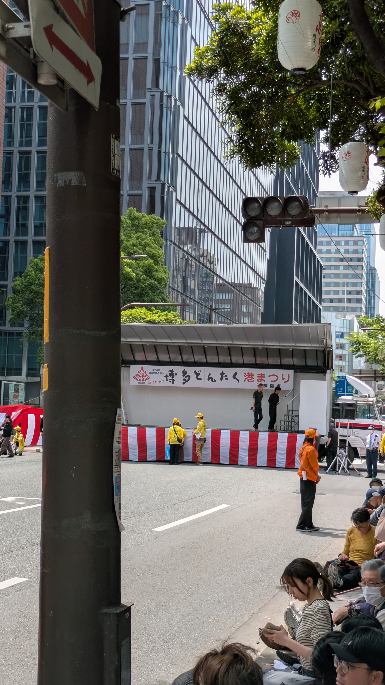
外に出てみると博多どんたくのセッティングが始まっていました。偶然にも今日が博多どんたくの開催日だったみたいですね。でも私は別の所に行くので残念ながら見物はできません。そのはずでした。
次の目的地に行くために切符を買う用のお金を準備しようとすると、背筋に冷たいものが走りました。さっき東方を買うために使ったお金、あれ電車賃用にホールドしていた「使ったらアウト」なお金だったようです。レシートも店のゴミ箱に捨ててしまって返品もできない。仮に今から行く目的地をキャンセルして、博多駅に向かったとしても、かなり歩くことになる。もっと考えてお金を使うべきだった。そう後悔しながら1時間ほどどんたくを眺めました。
スマホでここから博多駅までのルートを検索しているとき、ある物を思い出しました。それは私が通学で使っているニモカ。もしそれがあれば少なくとも今日の電車賃を心配しなくて済む。普段ロクに感謝していない神に祈りながら財布を探すと、ニモカを無事に発見。これでとりあえず自分の足は救われました。